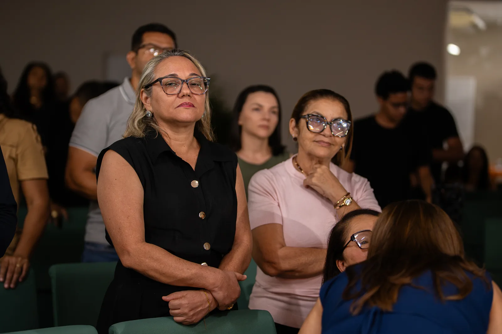
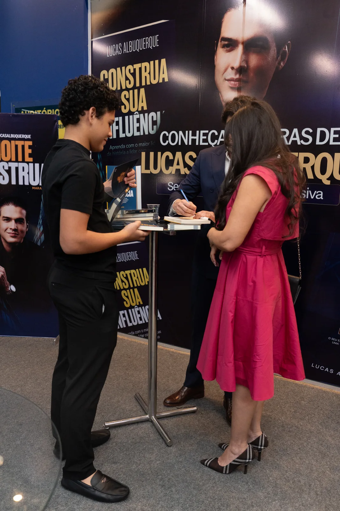

Você lidera gente.
E ninguém te ensinou como.
Uma noite sobre entender gente, escolher as pessoas certas e segurar quem você não pode perder. Cada edição leva o nome da cidade, acontece uma única vez ali e é realizada por alguém de lá.

Encontros Legado Leader
Gente, presença
e conexão.
Registros do nosso evento.



Imperatriz: uma edição já realizada.
300 vagas esgotadas
210 presentes
Alta venda de livros
Com pouca divulgação.
Ingresso popular: R$ 97.
A bilheteria e o cadastro são realizados pela escola. A próxima edição terá também uma categoria superior; consulte a equipe sobre sua disponibilidade.
Como cada edição se chama
A cidade vem primeiro.
Sempre.
A noite não é nossa, é da cidade. Por isso o nome dela é o maior elemento de tudo que a gente publica, e a assinatura da escola fica embaixo, discreta. Quem entra na sala entra para ver a própria cidade tratada como capaz.
O que acontece na noite
Duas horas e meia que
ensinam e emocionam.
Não funciona como palestra de abertura com venda no fim. A noite é construída para a pessoa sair sabendo alguma coisa que vai usar na segunda, e sentindo alguma coisa que ela não esperava sentir num evento de liderança.
Por que as pessoas certas ficam e as erradas prosperam
O que faz alguém recusar contraproposta para continuar com você, e por que gente boa rende pouco quando está na função errada. Com o que fazer na segunda-feira de manhã.
Que aquilo que você construiu pode significar mais
A noite passa por identidade, por pessoas difíceis e por traição, e ela não é morna. Muita gente chora e muita gente ri na mesma hora. É de propósito.
Abre com música ao vivo, e depois o palco é do Lucas. Tem um momento em que a sala inteira participa de uma ação social da própria cidade, e tem a chamada do Prêmio Construa. O resto a gente guarda, porque boa parte do que funciona depende de você não saber o que vem.
Próximas cidades
Onde a Noite Construa
vai acontecer
Uma cidade por vez. As Noites voltam depois da turma de 28/11, em outras praças. Belém é a próxima cidade prevista para 2027, sujeita a confirmação. A bilheteria e o cadastro ficam com a escola.
| Quando | Edição | Cidade | Anfitrião | |
|---|---|---|---|---|
| 2027 · a confirmar | Construa Belém | Belém · PA | Em organização | Entrar na lista |
| A definir | Próximas praças | Capitais e interior | Em conversa | Ser anfitrião |
| 22 de setembro | Construa Imperatriz | Imperatriz · MA | Empresários locais | Realizada |
O ingresso é sempre pago e sempre barato, na faixa de R$ 60 a R$ 120, e em toda edição existe o ingresso solidário, com desconto para quem leva um quilo de alimento. Parte da arrecadação de cada noite vira ação social na própria cidade.
Para quem recebe
A Noite Construa não é turnê.
Ela é recebida por alguém de lá.
A gente entrega a noite pronta. Quem convida a cidade é você, porque a cidade confia em você e não em quem está chegando.
A escola cuida do método, do material, da marca, da bilheteria e do cadastro. Quem recebe contribui com o espaço e a mobilização local. As condições da parceria são alinhadas com a equipe.
A noite inteira, pronta
O roteiro completo das duas horas e meia. As artes de divulgação com o nome da sua cidade, prontas para publicar. Os textos de convite para WhatsApp, Instagram e imprensa. A página de inscrição. O material impresso do participante. A mesa de livros. E treinamento por chamada com o time da escola antes da edição.
O espaço e as pessoas
Um lugar para reunir gente, com projetor, som e internet. Um convite de verdade para a sua base, que é a parte que ninguém pode fazer no seu lugar. Uma equipe pequena de quatro pessoas: divulgação, operação do dia, técnica e produção. E alguém responsável pelo credenciamento.
Licença zero na primeira edição
Você não compra nada e não assume risco de cachê. A primeira edição existe para você ver funcionando com a sua gente dentro.
Você define o preço do ingresso
Dentro da faixa recomendada, porque quem conhece o bolso da cidade é você. A receita de ingresso fica majoritariamente com você e paga a sua operação.
Quem conduz o palco depende da edição
Em algumas edições é o Lucas presencialmente. Nas outras, um facilitador formado pela escola, com o mesmo roteiro e o mesmo material. A noite é a mesma nos dois casos, e isso está definido antes de qualquer divulgação.
A ação social é da sua cidade
Parte da arrecadação fica ali, numa causa que você escolhe e acompanha. Isso não é detalhe de marketing, é parte do formato, e é o que faz a imprensa local abrir a porta.
Quem pode ser anfitrião
Igreja ou comunidade com base própria
Que quer entregar formação de liderança de verdade para os empresários e líderes da cidade, e que já tem espaço e gente para convidar.
Associação comercial, CDL ou grupo de empresários
Que já faz agenda de capacitação para os associados e quer uma noite com conteúdo e não com palestra motivacional.
Empresário, consultor ou produtor local
Que quer ser a porta da Legado Leader na cidade dele, e que depois pode se formar facilitador e conduzir as próprias edições.
A conversa inicial leva vinte minutos e serve para entender qual é a sua base, que espaço você tem e qual mês faz sentido. Não tem proposta comercial nessa primeira conversa.
Para empresas
Patrocinar uma edição
Cada edição reúne cerca de cento e cinquenta líderes e empresários de uma mesma cidade, numa sala em que praticamente todo mundo decide compra. O patrocínio cobre o custo da noite e coloca a sua marca diante desse público. A cota master dá fala no palco, o que transforma a sua empresa de logotipo em história contada na própria cidade.
| Cota | Vagas | Valor | O que inclui |
|---|---|---|---|
| Master | 1 | R$ 15.000 | Marca na abertura e no palco, fala de 3 minutos, mesa no foyer e citação em toda a comunicação |
| Ouro | 3 | R$ 5.000 | Marca nas artes, mesa no foyer e cota ampliada de convites |
| Apoio | 6 | R$ 2.000 | Marca nas artes e no telão, mais cota de convites para os seus clientes |
Valores de referência, ajustados ao tamanho da sala de cada edição. Permuta é avaliada caso a caso, e hospedagem, passagem, espaço e mídia local entram como valor de cota. Parte da arrecadação de cada edição vira ação social na cidade.
A sua cidade tem gente
liderando no escuro.
Se você tem uma base que confia em você e um lugar para reunir pessoas, a Noite Construa acontece aí.